Building Agentic Layers
Stop treating prompts, sub-agents, workflows, experts, and orchestrators as disconnected tricks. They are one buildable layer around your application—and this chapter gives you a ruler for leveling it.
Mastery promise. By the end, you will be able to separate application code from agentic infrastructure, locate a real codebase on the three-Class ladder, trace an ADW from trigger to detached process, explain how an orchestrator bridges into that workflow, and name the single next rung your own codebase should build.
Thirteen lessons become one object
You already learned prompts, feedback loops, AFK execution, custom agents, orchestration, and agent experts. The capstone move is to stop holding them as a bag of techniques and see the system they collectively form.
Imagine opening a repository and finding a prime prompt, several sub-agents, a few tools, a plan command, a review command, a workflow script, a database, and an orchestrator UI. A novice sees many unrelated files. An experienced operator sees a single thing with a maturity level: an agentic layer. That change in perception matters because scattered assets receive scattered maintenance. A named layer can be audited, graded, improved, and owned.
The working course repository is deliberately a capstone. At the root, .claude/ and adws/ teach and run the agents. Under apps/, several different applications provide the work surface. The layer can plan, build, review, fix, remember domain knowledge, launch detached workflows, stream events, and let one orchestrator coordinate the whole system. The lesson does not ask you to copy that destination blindly. It asks you to locate your present rung and add the next missing dimension.
The ruler: Classes change who runs the work
Class 1 · In-loop
The engineer initiates agentic primitives in the terminal.
G1 Prime + memoryG2 Sub-agentsG3 Custom toolsG4 Closed loopsG5 TemplatesG6 Prompt chainsG7 Agent experts
Class 2 · Out-loop
A trigger and deterministic runtime can operate agents without the engineer attending.
G1 Out-loop fabricG2 AI Developer Workflows
Class 3 · Orchestrated
A custom lead agent creates, reads, commands, checks, interrupts, and retires other agents.
G1 OrchestratorG2 Orchestrator workflowsG3 Orchestrator runs ADWs
The ladder has two rules. First, it stacks: Class 3 does not replace Class 1 or Class 2. It contains and commands them. Second, a Grade adds a new dimension inside a Class; a Class jump changes the operating relationship. Adding a review command raises the quality of an in-loop layer. Adding a detached trigger changes whether you must be present. Adding an orchestrator changes who coordinates the agents.
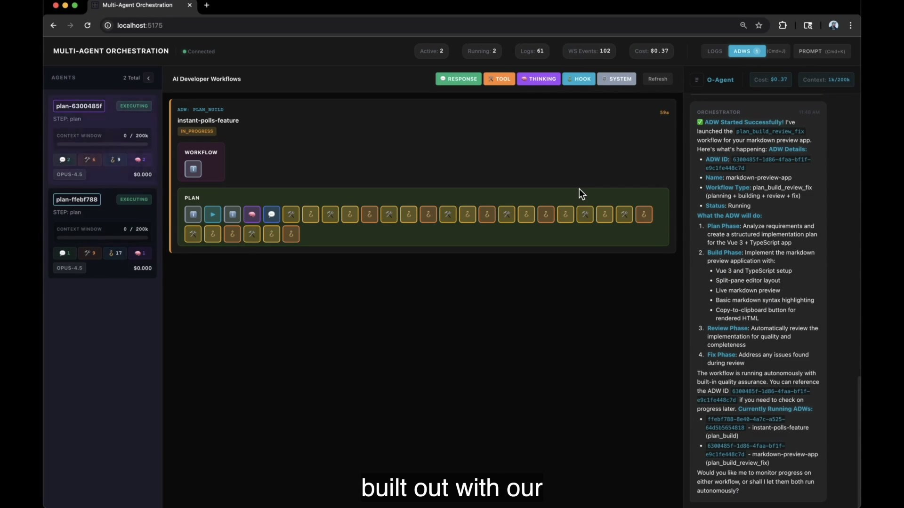
How to use this capstone
Every major idea repeats the same learning cycle: Hook → Picture → Story → Name → Worked example → You try → Fail/fix → Current Practice → Retrieval → Teach-back. Do not skip the small action because the terms feel familiar. Recognition is not control. You have mastered a rung only when you can find it in the repository, explain the compute advantage it adds, identify its failure mode, and decide whether it is the next useful investment for a real codebase.
The two-layer codebase
The application layer serves the user. The agentic layer teaches agents how to operate that application. Confusing the two makes agentic infrastructure look like disposable prompt debris.
1 · Hook — concrete failure
The repository with excellent prompts nobody owns
A team accumulates a planning prompt in a wiki, a test command in someone’s home directory, a reviewer agent in another repository, and a webhook that only its author understands. Each piece works. Together they do not improve. When an application changes, the prompts drift. When a model changes, nobody knows which workflows depend on it. The team has agentic assets, but it does not yet treat them as an engineered layer.
The failure is architectural, not linguistic. The team sees the application as the “real” product and everything around the agents as convenience glue. Dan reverses that priority: the mechanism that repeatedly operates the product is itself a first-class system. It deserves a boundary, vocabulary, maintenance loop, and roadmap.
2 · Picture — inner product, outer operating system
Draw the boundary before adding capability
Application layer
The inner work surface: database, frontend, backend, scripts, DevOps, infrastructure, notebooks, and related applications.
apps/markdown_preview · apps/nile · apps/pomodoro_timer · apps/simple-html-file · apps/orchestrator_*Agentic layer
The outer operating system: instructions, sub-agents, tools, feedback loops, templates, chains, experts, triggers, ADWs, and orchestration.
.claude/ · adws/ · specs/ · ai_docs/ · app_review/ · app_fix_reports/3 · Story — read Dan’s ring
Green squares operate dark squares
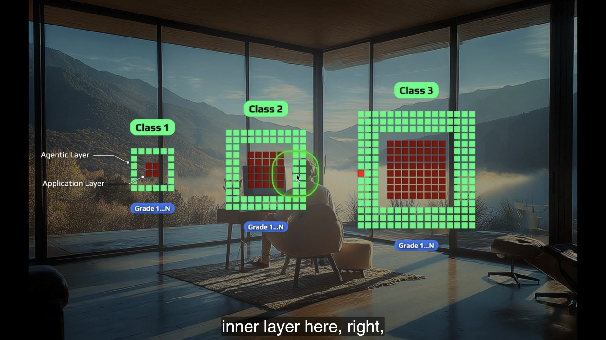
Notice what the diagram does not say. It does not say the application disappears. It does not say every green square is a prompt. The application remains the reason the repository exists; the outer ring becomes the way increasing amounts of engineering work are performed on it. The mature codebase contains both.
4 · Name it — precise term
5 · Worked example — split the course repository
One shared layer, heterogeneous applications
Inspect the outer ring
The root .claude/ contains commands, seven sub-agent definitions, two skills, three expert directories, and hooks. The root adws/ contains triggers, deterministic modules, tests, and plan/build/review/fix workflow programs. Runtime evidence lands in directories such as specs/, app_review/, and app_fix_reports/.
Inspect the inner work surface
The apps/ directory includes a Vue markdown-preview app, a Python Pomodoro CLI, a static HTML file, a Nile shopping demo, and orchestrator applications. Their technologies differ. The shared layer is specialized to understand and operate this bundled product surface.
This organization creates a crucial context advantage: one team of agents can see related frontends, backends, scripts, databases, and operational code together. When related repositories are separate, Dan recommends collecting them beneath apps/, using git submodules where appropriate. The point is not aesthetic monorepo purity. It is to give the agentic layer the product context required to act across boundaries.
6 · You try — the two-column audit
Classify before you improve
- Choose one codebase you work in regularly.
- Write “application layer” and list every user-serving or operational component.
- Write “agentic layer” and list every instruction, prompt, agent, tool, trigger, workflow, evidence directory, and governance hook.
- Circle anything that has no owner or drifts independently of the application.
- Write one sentence: “Our agentic layer currently helps agents ___, but it cannot yet ___.”
Pass if another engineer can place every listed artifact on one side without asking what you meant by “AI stuff.”
7 · Common fail + fix
Failure: equating the layer with a folder
Symptom: your audit ends at .claude/, so it omits ADW programs, database tables, runtime evidence, WebSocket events, and the orchestrator application that makes the layer observable.
Fix: classify by function, not pathname. If an artifact exists to teach, trigger, coordinate, constrain, observe, validate, or improve agent work over the application, it belongs to the agentic layer. If it directly serves the product user or runs the product, it belongs to the application layer. Some infrastructure supports both; state which role you are discussing.
8 · Current practice overlay
9 · Retrieval check
1. What is the difference between the application layer and the agentic layer?
Reveal answer
The application layer serves users and runs the product; the agentic layer teaches, triggers, coordinates, observes, and improves agents operating that application.
2. Why can adws/ belong to the agentic layer even though it contains Python code?
Reveal answer
Classification follows purpose, not file type. Those programs deterministically orchestrate agent steps over the application.
3. Why bundle related apps beneath one apps/ directory?
Reveal answer
So one specialized agentic layer can see and operate the complete related product surface instead of losing cross-repository context.
10 · Teach-back
Explain in 60 seconds: “The agentic layer is not just my prompt folder.” Use one application path, one agent instruction path, one workflow path, and one evidence path from the course repository.
Pass if your listener can redraw the inner/outer boundary and correctly place a new review report.
The destination: codebase singularity
A mature layer crosses a threshold: agents can operate the codebase better than the engineer can alone. The useful interpretation is incremental and evidence-based, not magical autonomy.
1 · Hook — concrete failure
The autonomy slogan with no climb beneath it
A team announces that its goal is a self-running codebase. It connects a frontier model to a shell and asks for end-to-end feature delivery. The first run succeeds enough to impress everyone. The second run silently misreads context. The third creates a change nobody can explain. Because the team started with the destination, it has no vocabulary for the missing rungs: memory, focused agents, review loops, composable steps, deterministic transitions, durable evidence, and orchestration.
The failure is not ambition. It is treating a threshold as a switch. Dan’s ladder makes the destination actionable by forcing a sequence: locate the current Class and Grade, name the unique missing element, build it, and verify the added compute advantage.
2 · Picture — a threshold built from rungs
Reliable primitive
One prompt or agent performs one bounded job with evidence.
Reliable workflow
Composable steps run with feedback, logs, and deterministic control.
Trusted operation
Teams of agents carry more of the codebase safely than a human can carry alone.
3 · Story — the definition beat
“My agents can now run my codebase better than I can. I trust them to ship more than I trust myself or my team.”Dan · approximately 04:24
The recording uses B-roll at this moment, so the definition is better held as a claim you can interrogate. What would “better” mean? More complete context, consistent templates, parallel focused work, repeatable review, durable evidence, less fatigue, and a lower chance that one person forgets a transition. What would “trust” mean? Not hope. It means the layer has earned a place in the delivery path through observable, repeatable outcomes.
4 · Name it — precise term
5 · Worked example — turn “trust” into evidence
Class-3-Grade-3 is a configuration, not a prophecy
In the course repository, the orchestrator does not merely chat about a feature. It can call start_adw, create a database record, launch a detached workflow program, watch plan/build/review/fix agents emit events, and query the workflow with check_adw. The UI offers both a generic LOGS view and an ADWS swimlane. Plans land under specs/; review and fix artifacts land on disk. Each layer contributes a kind of evidence.
This is the practical meaning of running toward the singularity: make more useful operation possible, and make every increase in compute produce more evidence and therefore more warranted trust.
6 · You try — define your trust threshold
- Name one repeated engineering workflow in your codebase.
- Write the steps a trusted agentic layer would carry without your relay.
- For every step, name an artifact or event that would prove it happened.
- Mark the decision points that still require human judgment.
- Finish: “I would trust this workflow to run unattended when ___.”
Pass if the blank contains observable conditions, not “the model is good enough.”
7 · Common fail + fix
Failure: measuring autonomy instead of reliability
Symptom: the team celebrates a long unattended run even though it cannot isolate failures, reproduce intermediate state, or explain why the output deserves trust.
Fix: grade the layer by reliable, observable capability. Add one missing rung at a time. A two-step plan/build ADW with explicit evidence is more mature than a ten-step opaque prompt chain. Autonomy without inspectable control is not the course destination.
8 · Current practice overlay
9 · Retrieval check
1. Define the codebase singularity without using the word autonomy.
Reveal answer
It is the threshold where the engineer trusts teams of agents to run the codebase better than the engineer or team can alone.
2. Why is zero-touch engineering a North Star rather than the first rung?
Reveal answer
Because unattended operation depends on accumulated primitives, feedback, composability, deterministic control, evidence, and orchestration.
3. What should more compute produce?
Reveal answer
More warranted trust through better validation, evidence, and reliable outcomes—not merely more generated work.
10 · Teach-back
Explain in 90 seconds: why the codebase singularity is both ambitious and incremental. Use Class-3-Grade-3 as an evidence-bearing example, not as a claim of unlimited autonomy.
Pass if your listener can name one rung that must exist before trust can increase.
Class 1: build the in-loop ladder
Class 1 is not “basic.” It is the seven-rung foundation every higher Class still depends on: prime, focus, tools, feedback, templates, composition, and learning.
1 · Hook — concrete failure
The team that jumps from a prime prompt to orchestration
A codebase has a useful memory file and one broad agent. The team immediately tries to build a multi-agent manager. It now has more sessions, more logs, and more model cost—but the agents still lack focused roles, review loops, engineering templates, composable commands, and maintained domain knowledge. Orchestration has multiplied an immature primitive.
Class 1 prevents this. Every Grade adds a distinct compute advantage the later Classes reuse. If a prompt cannot run independently, an ADW cannot make it reliable. If a review loop does not produce evidence in-loop, an orchestrator cannot conjure trustworthy review from a fleet.
2 · Picture — seven dimensions, one stack
Prime + memory
Give the agent the codebase map, conventions, and starting context.
.claude/commands/prime.md · CLAUDE.md · AGENTS.mdSub-agents
Assign one narrow context, model, prompt, and tool set to one purpose.
.claude/agents/docs-scraper.md · planner.md · scout-report-suggest-fast.mdCustom tools
Add skills, MCP servers, or direct tool instructions when the task needs them.
.claude/skills/start-orchestrator/ · .mcp.json.sampleClosed loops
Turn request → validate → resolve into explicit, evidence-producing commands.
.claude/commands/review.md · fix.md · app_review/Templates
Encode how the team handles fixes, features, refactors, and other task types.
.claude/commands/plan.md · task_type switchPrompt chains
Connect independently runnable commands and agents into larger workflows.
orch_scout_and_build.md · build_in_parallel.mdAgent experts
Maintain narrow mental models through Act → Learn → Reuse.
.claude/commands/experts/{adw,database,websocket}/3 · Story — watch each missing dimension appear
Grade 2: one purpose gets its own context
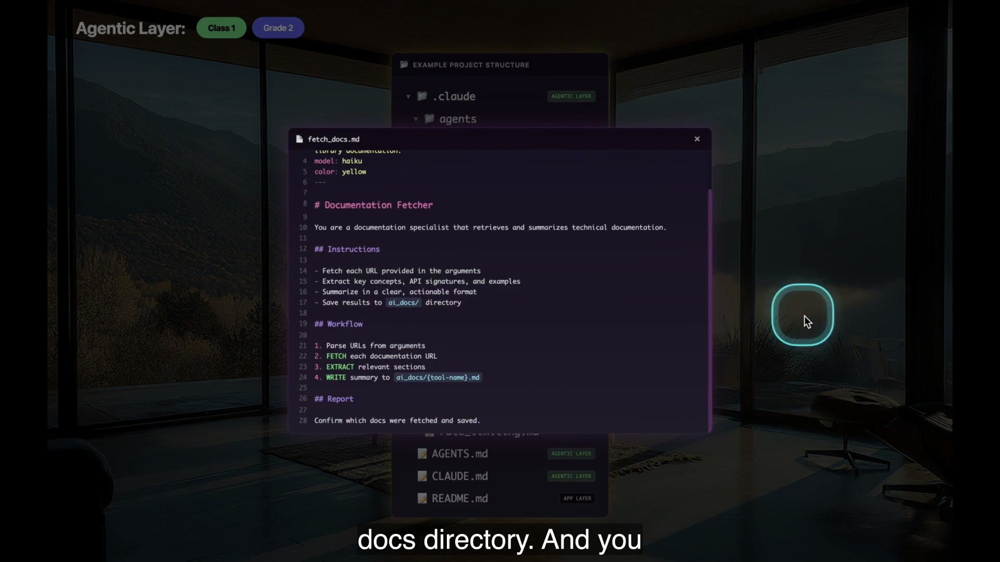
ai_docs/. In the working repo, docs-scraper.md uses Sonnet, while the fast scout uses Haiku and heavy plan/build roles use Opus.Grade 3: tools expand the Core Four
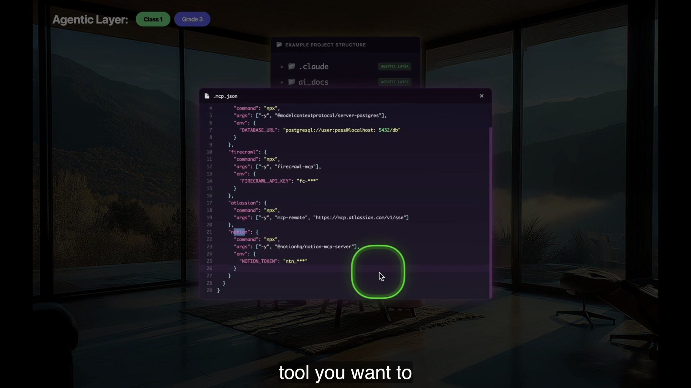
Grade 4: review leaves durable evidence
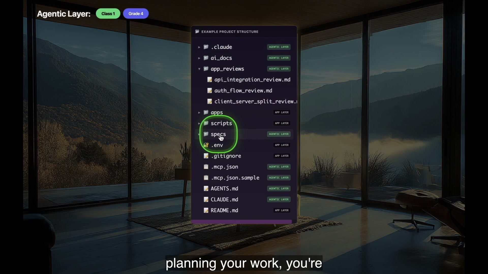
review.md analyzes diffs, grades risk, ends in PASS/FAIL, and writes a timestamped report for fix.md to resolve.Grade 5: templates encode engineering judgment
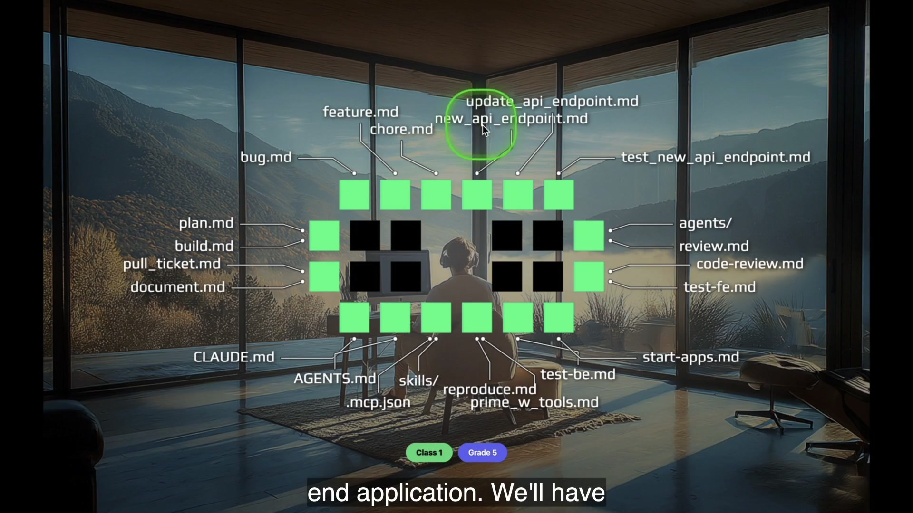
plan.md, which classifies chore|feature|refactor|fix|enhancement and conditionally emits the appropriate plan sections.Grade 6: composition without losing debuggability
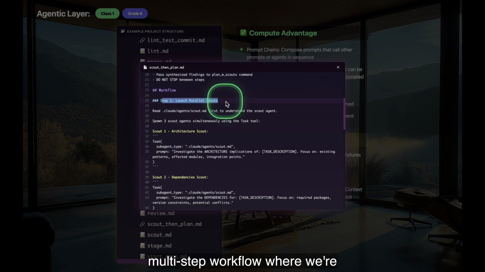
Grade 7: useful work updates the mental model
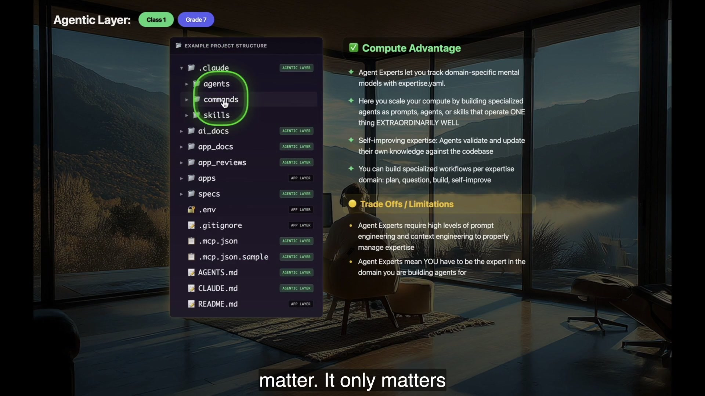
expertise.yaml file is a mental model checked against code, never a replacement for code as the source of truth.4 · Name it — the Class-1 ladder
5 · Worked example — trace one task through seven rungs
“Add a word-count badge to markdown_preview”
At Grade 1, /prime loads the repository’s operating context. At Grade 2, a scout can inspect the Vue app without flooding a builder’s context. At Grade 3, tools let agents search, inspect, or query the environment. At Grade 4, /review checks the resulting diff and writes a verdict. At Grade 5, /plan recognizes a feature and applies the feature-shaped plan sections. At Grade 6, a chain can connect plan → build → review while preserving individual commands. At Grade 7, the ADW or relevant domain expert can answer architecture questions using an expertise model validated against current code.
Nothing in that trace requires the engineer to start by building an orchestrator. The task becomes easier, more focused, more repeatable, more inspectable, and more reusable one Grade at a time. That is the purpose of the maturity model: make the next useful investment obvious.
Read the review loop as an evidence contract
request: /build specs/word-count-badge.md
validate: /review
evidence: app_review/review_<timestamp>.md
resolve: /fix app_review/review_<timestamp>.md
evidence: app_fix_reports/fix_<timestamp>.mdThe filenames may change in another codebase. The structure is the grade: action produces an inspectable judgment, and that judgment becomes input to a resolving action.
6 · You try — locate the next missing dimension
- Start at Grade 1 and ask whether your codebase has the unique element.
- Continue in order. Do not award Grade 6 because one giant prompt happens to contain many steps; require independently runnable components.
- Stop at the first missing Grade.
- Write one artifact that would prove the Grade exists.
- Estimate the repeated work that artifact would remove or improve.
Pass if the proposed next step adds exactly one new dimension rather than “build an agent platform.”
7 · Common fails + fixes
| Rung | Failure | Repair |
|---|---|---|
| G2 | Every sub-agent receives the same broad context and model. | Give one agent one prompt, one purpose, and a right-sized model. |
| G3 | Tool sprawl consumes context and adds fragile dependencies. | Ask whether a direct prompt and existing shell tool provide the same compute advantage. |
| G4 | “Review” means another chat answer with no durable verdict. | Write risk-ranked evidence to disk and make the resolve step consume it. |
| G5 | A free-form plan is mistaken for a template. | Encode conditional structure for task types and complexity. |
| G6 | The chain cannot run or fail one step at a time. | Preserve an independently callable command for every composed step. |
| G7 | The expertise file is treated as truth. | Require file/line validation against code and a self-improve loop. |
8 · Current practice overlay
9 · Retrieval check
1. List all seven Class-1 Grades in order.
Reveal answer
Prime + memory; sub-agents; custom tools; closed loops; templates; prompt chains; agent experts.
2. What distinguishes a Grade-6 prompt chain from one giant prompt?
Reveal answer
Its component prompts and agents remain independently runnable, so failures can be isolated and components can be reused or parallelized.
3. Why might a prompt be better than an MCP integration at Grade 3?
Reveal answer
If existing tools already expose the needed capability, direct instructions may add the same compute advantage with less token and maintenance overhead.
4. What makes expertise.yaml safe to reuse?
Reveal answer
The expert treats it as a mental model, validates claims against current code, cites files and lines, and self-improves when the model drifts.
10 · Teach-back
Teach the ladder in two minutes: give each Grade one verb—orient, focus, extend, verify, standardize, compose, learn—and cite one real course path for each.
Expert pass: your listener can diagnose why a giant plan/build/review prompt is not automatically Grade 6.
Class 2: get the engineer out of the loop
The first Class jump happens when a trigger and deterministic runtime can run agents without the engineer attending the terminal. Grade 2 turns that fabric into complete AI Developer Workflows.
1 · Hook — concrete failure
The perfect prompt chain that waits for you
Your plan → build → review chain works. It is composable, produces evidence, and handles a recurring chore. Yet every run begins with you opening a terminal, pasting the prompt, waiting for the result, and deciding when to send the next command. The agentic capability is real, but human presence still gates its throughput.
This is where a Grade increase is no longer enough. Another prompt will not change who initiates and carries the sequence. You need an out-loop fabric: an external trigger, a durable work record, deterministic step control, and an agent runtime that can execute headlessly.
2 · Picture — the first Class jump
3 · Story — fabric first, workflows second
Class 2 Grade 1: make unattended execution possible
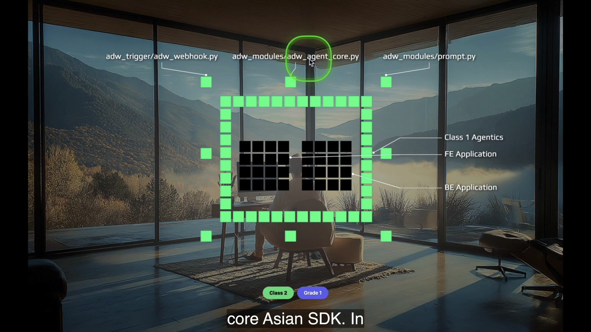
adw_manual_trigger.py and the orchestrator’s typed start_adw tool; there is no literal production webhook file matching every idealized label.Class 2 Grade 2: deterministic code owns a full pipeline
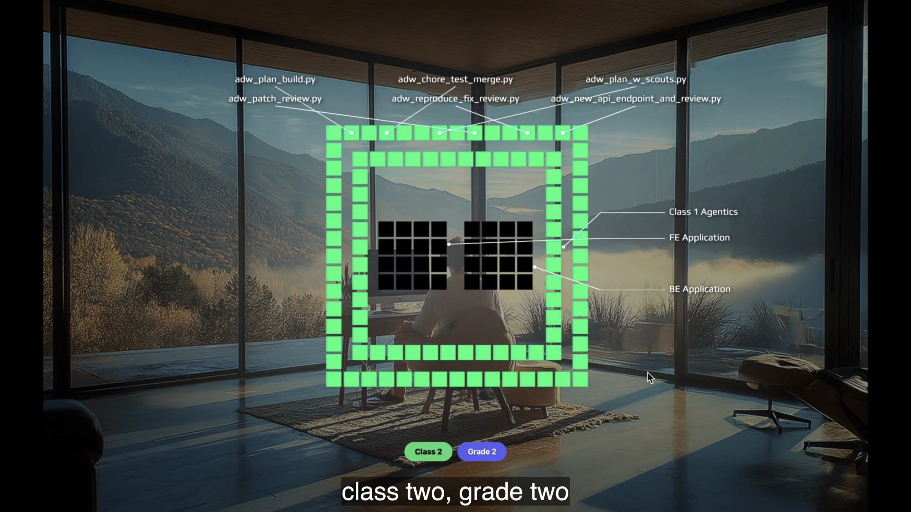
4 · Name it — precise term
5 · Worked example — trace adw_plan_build.py
Two steps, one durable workflow record
The program declares TOTAL_STEPS = 2. run_plan_step constructs a query with prompt=f"/plan {prompt}"; run_build_step later constructs prompt=f"/build {plan_path}". Both attach logging hooks and message handlers. The plan step writes a plan path; the build step consumes it. The deterministic program can update step status before and after each agent invocation.
STEP_PLAN = "plan"
STEP_BUILD = "build"
TOTAL_STEPS = 2
run_plan_step → prompt="/plan <task>"
run_build_step → prompt="/build <plan_path>"The trigger path adds the Class-2 property. adw_manual_trigger.py creates the workflow record. adw_scripts.py maps the workflow type to adws/adw_workflows/adw_<type>.py, then spawns a detached process:
cmd = ["uv", "run", workflow_path, "--adw-id", adw_id]
subprocess.Popen(
cmd,
stdin=subprocess.DEVNULL,
stdout=subprocess.DEVNULL,
stderr=subprocess.DEVNULL,
start_new_session=True,
)The child process needs only the ADW ID because it can fetch prompt, working directory, and status from the database. This separates durable state from one interactive terminal session. It also explains the central formula: raw code is predictable but cannot reason; raw agents can reason but vary. The ADW uses each where it is strongest.
6 · You try — narrate the state machine
- Open
adws/adw_workflows/adw_plan_build.py. - Find
TOTAL_STEPS,run_plan_step, andrun_build_step. - Write down which values deterministic code controls before each agent starts.
- Open
adws/adw_triggers/adw_scripts.pyand find the detachedPopen. - Explain what the new process can recover from
adw_id.
Pass if your explanation clearly separates workflow state from model reasoning.
7 · Common fail + fix
Failure: calling any chain an ADW
Symptom: an agent receives “plan, then build, then review” as one prompt, and the team labels it an ADW even though the host cannot inspect, validate, retry, or resume between steps.
Fix: ask who owns transitions. In a prompt chain, the agent carries the sequence. In an ADW, deterministic code regains control between agent invocations. The host can write state, emit events, choose the next step, stop, retry, or route a failure before asking another agent to reason.
8 · Current practice overlay
9 · Retrieval check
1. What unique element creates Class 2?
Reveal answer
An out-loop system can trigger and run agents without the engineer attending the terminal.
2. Why is an ADW more controllable than a prompt chain?
Reveal answer
Deterministic code owns the transitions between agent steps, so it can log, validate, persist, retry, stop, or route each boundary.
3. What exactly does adw_scripts.py spawn?
Reveal answer
A detached uv run adws/adw_workflows/adw_<type>.py --adw-id <uuid> process.
4. Why is adw_id sufficient for the child process?
Reveal answer
The durable database record holds the workflow’s input and state, so the process can fetch the rest of its context.
10 · Teach-back
Draw and explain: trigger → database record → detached workflow → plan agent → build agent → artifacts/events. Point to the boundary where deterministic code regains control.
Expert pass: your listener can distinguish Class-2 Grade 1 fabric from Grade-2 full ADWs.
Class 3: orchestrate the layer
The second Class jump adds a lead agent that can manage other agents. At Grade 3, that orchestrator also launches and checks deterministic ADWs, combining centralized intelligence with inspectable pipelines.
1 · Hook — concrete failure
The human becomes the hidden orchestrator
You can run several focused agents and several ADWs, but you still decide which agent to create, which prompt to send, when to check status, when to interrupt, which logs to read, and when a larger deterministic workflow should begin. The system has a fleet; coordination still lives in your head.
Class 3 turns that coordination role into an explicit custom agent. This is not a magical supervisor with unlimited authority. It is a lead engineer with a bounded management interface. The interface matters more than its personality: create, list, command, check, delete, interrupt, inspect logs, report cost, start an ADW, and check an ADW.
2 · Picture — intelligence above two execution modes
start_adw hands large pipelines to deterministic code.3 · Story — inspect the mature inventory
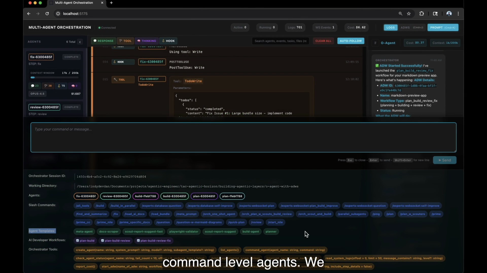
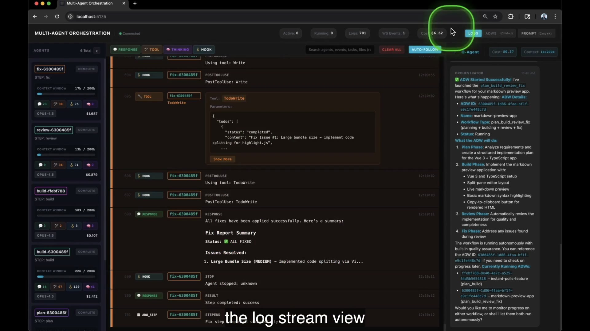
4 · Name it — precise term
5 · Worked example — trace the ten-tool bridge
Eight management tools + two ADW tools
| Capability | Tools | What the boundary buys |
|---|---|---|
| Lifecycle | create_agent, list_agents, delete_agent | The orchestrator can instantiate and retire focused workers without shell improvisation. |
| Direction | command_agent, check_agent_status, interrupt_agent | Work and control are explicit operations with observable state. |
| System view | read_system_logs, report_cost | The lead agent can reason over events and resource use. |
| Deterministic bridge | start_adw, check_adw | The orchestrator delegates big pipelines to Class-2 code instead of carrying every step in its own context. |
AgentManager.create_management_tools() returns exactly ten callables. A stale comment elsewhere may say eight; the code returns eight agent-management tools plus start_adw and check_adw. The latter pair is the decisive Grade-3 bridge.
When the orchestrator calls start_adw, the tool validates the requested workflow file, creates an ai_developer_workflows record, broadcasts the new state, and invokes the same detached runner used by the CLI path. There is no host parser searching for a literal “start adw:” prefix. Natural language is interpreted by the orchestrator model, which emits a typed tool call.
orchestrator model
→ mcp__mgmt__start_adw
→ create_adw(...)
→ run_adw_workflow_async(adw_id, workflow_type)
→ uv run adw_<type>.py --adw-id <uuid>The repository’s canonical backend port is 9403; the frontend is 5175. The configured orchestrator default is claude-opus-4-5-20251101, which dates the implementation rather than the tactic. A newer model can be supplied through configuration without changing the management interface.
6 · You try — classify an orchestrated request
For the request “add a copy button, review it, and fix any blocker,” decide which work belongs in each plane:
- What should the orchestrator decide?
- What should a focused agent reason about?
- What should deterministic ADW code order and record?
- What evidence should the UI expose?
- Which exact tool crosses from Class 3 into Class 2?
Pass if you choose start_adw for the bridge and do not ask the orchestrator to simulate every pipeline transition in one context.
7 · Common fail + fix
Failure: starting at Class 3
Symptom: a team builds a manager before it has reliable independent commands, agent roles, review artifacts, or deterministic workflows. The orchestrator spends its context inventing work shapes and repairing lower-layer ambiguity.
Fix: prove the lower rungs first. A Class-3 system should conduct capabilities that already have stable contracts. The orchestrator is a control plane, not a substitute for focused prompts or workflow design. If /review is unreliable alone, calling it through a lead agent merely makes the failure harder to locate.
8 · Current practice overlay
9 · Retrieval check
1. What creates the Class-3 jump?
Reveal answer
An orchestrator agent can centrally create, read, command, check, interrupt, and retire other agents.
2. How many management tools does the working orchestrator expose?
Reveal answer
Ten: eight agent-management tools plus start_adw and check_adw.
3. Is “start adw:” parsed by host code?
Reveal answer
No. The orchestrator model interprets the request and emits a typed start_adw tool call.
4. Why keep ADWs beneath the orchestrator?
Reveal answer
They provide deterministic, durable, inspectable control for large pipelines while the orchestrator focuses on intent and coordination.
10 · Teach-back
Explain in two minutes: “The orchestrator does not replace the ADW.” Name the ten-tool split and trace one request from natural language to detached process.
Expert pass: your listener can explain why typed tools beat a brittle chat-string parser.
Specialize the layer to win
The course’s most repeated warning is architectural: do not spend your leverage building a generic layer that understands no codebase deeply.
1 · Hook — concrete failure
The reusable platform that cannot finish a local task
An engineer notices that several repositories need planning, building, and review, so they design one universal agent platform. Its prompts avoid naming any framework. Its reviewers use generic checklists. Its tools expose every possible integration. It is highly reusable—and every real task requires a long preamble explaining local architecture, conventions, run commands, risk boundaries, and product vocabulary.
The platform optimized the wrong objective. Reuse is valuable only if it preserves the capability that makes the layer useful. Your application code is already a specialized solution to a particular problem. The layer that operates it should inherit that specificity.
2 · Picture — many apps, one product-shaped ring
Markdown previewNile client/serverPomodoro CLIStatic HTMLOrchestrator UIDatabase + events
One specialized layer knows how this product surface plans, builds, reviews, fixes, launches, observes, and learns.
3 · Story — inspect specificity in the repo
The repository does not contain only universal commands. It contains prime_nile.md, experts for ADWs, databases, and WebSockets, commands that understand the project’s plan/review artifact conventions, and an orchestrator configured to work inside this bundled tree. The start_adw tool discovers workflow types by scanning this repository’s adws/adw_workflows/adw_*.py files. That is productive coupling: the layer knows the system it operates.
Specialization does not forbid reusable primitives. A logging hook, agent SDK wrapper, or review schema can be copied. It means the final layer is allowed to speak the codebase’s language and optimize for its real workflows. If two unrelated repositories require different layers, duplication may be cheaper than one abstraction that forces both into a weak common denominator.
4 · Name it — operating principle
5 · Worked example — general shape, local contract
| Primitive | Reusable shape | Specialized contract in this repo |
|---|---|---|
| Plan | Classify work and produce ordered steps. | Recognize chore|feature|refactor|fix|enhancement; write to specs/; include conditional sections. |
| Review | Inspect changes and issue a verdict. | Read git diffs; rank Blocker/High/Medium/Low; write app_review/review_*.md; end PASS/FAIL. |
| ADW | Deterministic program wraps agent steps. | Use this DB schema, event types, command files, working directory, and adw_<type>.py discovery. |
| Expert | Maintain a domain mental model. | Track ADW, database, or WebSocket architecture; validate claims against this code; cap expertise at 1000 lines. |
The general shape lets you transfer the idea. The specialized contract creates compute advantage. A generic reviewer can mention “test coverage.” A specialized reviewer can know the application’s artifact directories, commands, risk tiers, and expected verdict format.
6 · You try — write a specialization boundary
- Name the codebase or tightly related app bundle the layer wraps.
- List three repeated workflows worth optimizing.
- List three domain terms agents must use correctly.
- List one generic capability you can reuse unchanged.
- List one local contract that must remain codebase-specific.
Pass if the boundary is narrow enough that you can name what the layer should intentionally not support.
7 · Common fail + fix
Failure: confusing specialization with hard-coded accidents
Symptom: paths, ports, and model names are scattered through prompts with no configuration boundary, so every local change breaks the layer.
Fix: specialize behavior and vocabulary while keeping volatile values in explicit configuration. The repo’s BACKEND_PORT and ORCHESTRATOR_MODEL are configurable environment-backed values. Specialization should deepen domain fit, not eliminate maintainability.
8 · Current practice overlay
9 · Retrieval check
1. What is Dan’s most repeated warning about the layer?
Reveal answer
Do not build a generic one-size-fits-all layer; specialize it to the codebase and use cases you care about.
2. Does specialization forbid copying a logging hook?
Reveal answer
No. Reusable ingredients are fine; the assembled layer should still optimize for the local domain.
3. Why can duplication be acceptable?
Reveal answer
Separate specialized layers may outperform a shared abstraction that forces unrelated codebases into weak generic contracts.
10 · Teach-back
Explain with one example: the difference between reusing a primitive and genericizing the whole layer. Use the review command or ADW runner.
Pass if your listener can name one contract that should remain local.
Everything reduces to the Core Four
A prompt, skill, sub-agent, expert, ADW step, and orchestrator all package the same invariant: context, model, prompt, and tools. Form factor matters only insofar as it changes compute advantage.
1 · Hook — concrete failure
The architecture debate that never diagnoses the run
A team argues whether a capability should be an MCP server, a skill, a sub-agent, or a slash command. Meanwhile, the failed run had stale context, an oversized model for a trivial scrape, an ambiguous prompt, and a tool set that could read but not write the required artifact. The team debated packaging while ignoring the four variables that actually shaped performance.
2 · Picture — four knobs inside every form
3 · Story — unwrap three forms
The documentation scraper is a markdown sub-agent with a model and instructions. The ADW plan step is a Python function that constructs a query with a model, working directory, prompt, allowed tools, hooks, and handlers. The orchestrator is a persistent Agent SDK client with a system prompt and ten management tools. Their lifecycles differ, but each resolves to the same diagnostic questions: what did it see, which model reasoned, what was it asked to do, and what actions could it take?
This is why Dan can say a skill or MCP server may be replaceable by a simple prompt. If the existing environment already provides the required action, the prompt can modify how the agent uses that tool. Conversely, if the agent lacks the action entirely, prose cannot create it. The Core Four separates a capability gap from an instruction gap.
4 · Name it — invariant
5 · Worked example — diagnose one ADW plan failure
| Dimension | Question | Course-repo evidence | Possible repair |
|---|---|---|---|
| Context | Did the planner operate in the correct working directory with repository instructions available? | QueryOptions(cwd=working_dir); root memory and command files. | Correct the stored working directory or prime/load missing project context. |
| Model | Was the reasoning task matched to the selected model? | Plan/build defaults use Opus; fast scouts can use Haiku. | Right-size the model rather than changing the whole workflow. |
| Prompt | Did the plan request define the actual task and invoke the intended command? | prompt=f"/plan {prompt}". | Repair the durable ADW input or the /plan contract. |
| Tools | Could the agent inspect and write what planning requires? | Allowed tools include Read, Glob, Grep, Bash, Write, Edit, Task, and Skill. | Add or remove the minimum bounded capability; do not default to tool sprawl. |
The form factor tells you where to look. The Core Four tells you what to look for. This keeps debugging local: a stale expert answer may be a context/learning problem; a failed workflow spawn is deterministic runtime, not model reasoning; an orchestrator that chooses the wrong worker may have an ambiguous prompt or missing status evidence.
6 · You try — unwrap a favorite abstraction
- Choose one agent, skill, MCP tool, expert, or workflow you rely on.
- Write its context sources.
- Name its model and why that model fits.
- Summarize its prompt contract in one sentence.
- List its tools, then cross out any that do not add capability for the purpose.
Pass if you can predict one failure caused by each dimension.
7 · Common fail + fix
Failure: treating Core Four as a taxonomy of files
Symptom: the audit says “context = CLAUDE.md, prompt = command file, tools = MCP,” then stops. Runtime observations, working directory, retrieved expertise, sub-agent results, and tool outputs disappear from the model.
Fix: evaluate the Core Four at execution time. Context is everything visible during the run, including observations. Prompt includes system and task instructions. Tools include the actions actually permitted. Model includes the selected capability and cost profile. The four are dynamic run variables, not four folders.
8 · Current practice overlay
9 · Retrieval check
1. Name the Core Four.
Reveal answer
Context, model, prompt, and tools.
2. Why does the form factor not determine maturity by itself?
Reveal answer
A skill, prompt, sub-agent, or MCP server can package the same four primitives; maturity comes from the reliable compute advantage it adds.
3. Can a prompt replace a missing action?
Reveal answer
No. A prompt can teach better use of available tools, but prose cannot create a capability the environment does not expose.
10 · Teach-back
Unwrap three forms: a sub-agent, an ADW step, and the orchestrator. Name the Core Four for each and one lifecycle difference that the wrapper adds.
Pass if your explanation separates invariant primitives from useful packaging.
The whole course becomes one build order
AH-6 closes the arc by placing every earlier tactic inside the layer. The lessons are no longer a sequence you watched; they are capabilities you can locate.
Agentic Horizon: six lenses on the same system
Tactical Agentic Coding: eight operating rules
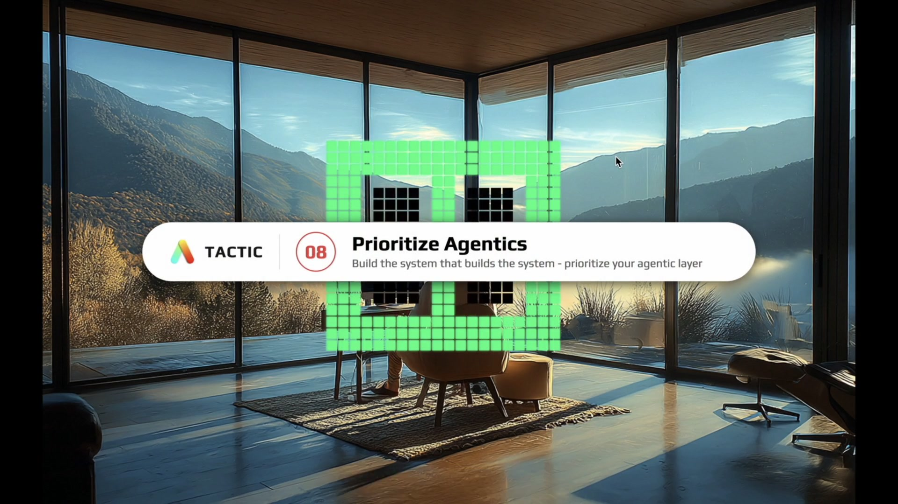
Graded capstone lab · Build & Climb the Agentic Layer
Audit every rung, read the deterministic spine, run an ADW from two entry points, operate an expert, and grade your own codebase. Use only the course repository.
Part 0 · Prepare the course stack · 5 points
- From the course repo, copy
.env.sampleto.env. - Set
ANTHROPIC_API_KEYandDATABASE_URLin your local environment file. Do not place secrets in your lab report. - Run
uv run apps/orchestrator_db/run_migrations.py. - Confirm
uv --version,bun --version, andclaude --version. - Verify the database tables with
psql "$DATABASE_URL" -c "\dt".
Pass criteria
- Seven tables exist:
orchestrator_agents,agents,prompts,agent_logs,system_logs,orchestrator_chat,ai_developer_workflows. - You can explain that migrations 5, 6, and 7 add indexes, functions, and triggers rather than tables.
Part 1 · Produce a one-page layer audit · 20 points
Without running an agent, verify one real path for every rung. Do not copy the table blindly: open each path.
| Rung | Evidence to locate | Your verified citation |
|---|---|---|
| C1 G1 | .claude/commands/prime.md, CLAUDE.md | |
| C1 G2 | .claude/agents/*.md, specs/, ai_docs/ | |
| C1 G3 | .claude/skills/*/SKILL.md, .mcp.json.sample | |
| C1 G4 | .claude/commands/review.md, fix.md, app_review/ | |
| C1 G5 | .claude/commands/plan.md task-type switch | |
| C1 G6 | orch_scout_and_build.md, adw_plan_build.py | |
| C1 G7 | .claude/commands/experts/{adw,database,websocket}/ | |
| C2 G1 | adw_manual_trigger.py, adw_scripts.py, adw_agent_sdk.py | |
| C2 G2 | adw_plan_build{,_review,_review_fix}.py | |
| C3 G1 | orchestrator_service.py, agent_manager.py | |
| C3 G2 | apps/orchestrator_3_stream/.claude/commands/orch_* | |
| C3 G3 | start_adw/check_adw, AdwSwimlanes.vue |
Pass criteria
- All 12 rows contain a path you personally opened.
- You identify
apps/*as the application layer and root.claude/+adws/as the agentic layer. - You name the model choices: fast scout = Haiku, docs scraper = Sonnet, heavy plan/build roles = Opus.
- You explain why the teaching diagrams and real file layout need not match one-to-one.
Part 2 · Read the deterministic ADW spine · 15 points
- Open
adws/adw_workflows/adw_plan_build.py. - Find
TOTAL_STEPS = 2. - Find
run_plan_stepinvoking/planandrun_build_stepinvoking/build. - Find
create_logging_hooksandcreate_message_handlers. - Open
adws/adw_triggers/adw_scripts.pyand find thesubprocess.Popencall withstart_new_session=True.
Pass criteria
Write one sentence that names what deterministic code controls and what the non-deterministic agents control. Then add the exact detached command shape that the runner constructs.
Part 3 · Run an ADW from the CLI · 15 points
uv run adws/adw_triggers/adw_manual_trigger.py \
"lab-feature" \
"plan_build" \
"Add a word-count badge to the markdown_preview app footer" \
"$(pwd)"- Query the newest
ai_developer_workflowsrow and record its name, type, and status. - Confirm a plan appeared beneath
specs/. - Confirm the agent changed
apps/markdown_preview; you must not type the application change. - Repeat with
plan_build_reviewand confirm anapp_review/report ends in PASS or FAIL.
Pass criteria
- At least one CLI-triggered ADW completes end to end.
- A durable workflow row, plan artifact, application diff, and review verdict are present.
- Your report records the ADW ID and artifact paths, but no secrets.
Part 4 · Run an ADW through the orchestrator · 20 points
cd apps/orchestrator_3_stream
./start_be.sh & # canonical backend port: 9403
./start_fe.sh & # frontend port: 5175
open "http://127.0.0.1:5175"- Ask: “Start a
plan_build_reviewADW namedlab-orchto add a copy-to-clipboard button to the markdown preview app.” - In the event stream, identify the
start_adwtool call and returnedadw_id. - Observe the run in both LOGS and ADWS swimlane views.
- Ask the orchestrator to check the ADW using its returned ID.
- From
agent_manager.py, list all ten orchestrator tools.
Pass criteria
- The orchestrator-launched workflow completes and appears in both views.
- You prove the bridge is the typed
start_adwtool, not literal string parsing. - Your ten-tool list contains eight agent-management tools plus
start_adwandcheck_adw. - If the UI cannot reach the backend, you check port
9403rather than the stale8002found in older notes.
Part 5 · Operate the ADW expert · 15 points
- REUSE: run
/experts:adw:question "How does start_adw spawn a workflow, and where is the swimlane UI rendered?" - Confirm the answer cites real files and lines.
- LEARN: use the agent to make a harmless comment-only change in an ADW file, then run
/experts:adw:self-improve true. - Validate that
expertise.yamlremains parseable YAML and at most 1000 lines.
python3 -c "import yaml; yaml.safe_load(open('.claude/commands/experts/adw/expertise.yaml'))"
wc -l .claude/commands/experts/adw/expertise.yamlPass criteria
You demonstrate REUSE and LEARN, explain ACT → LEARN → REUSE, and state why expertise.yaml is a mental model while the code remains the source of truth.
Part 6 · Grade this repo and your repo · 10 points
- Write one paragraph grading the course repo as Class-3-Grade-3.
- Name at least two consolidated rungs: templates inside
plan.md; out-loop entry through CLI/start_adwinstead of a literal webhook. - Run
/planand/buildindividually as well as through the chain; explain how individual execution isolates a failed step. - Write one paragraph grading your own codebase and naming the single next element to add.
Pass criteria
Both paragraphs are specific enough for a teammate to challenge. The next-rung proposal names one artifact, one repeated use case, and one piece of success evidence.
Overall rubric
| Score | Level | Evidence |
|---|---|---|
| 90–100 | Operator | Both trigger paths complete; every rung is cited; the expert loop runs; explanations distinguish agent reasoning from deterministic control. |
| 75–89 | Builder | One trigger path or expert loop has a gap, but the layer map and code trace are accurate and the next rung is specific. |
| 60–74 | Reader | Terms are recognized, but runtime evidence or real path verification is incomplete. |
| Below 60 | Rebuild foundation | Repeat Parts 1 and 2 before launching the orchestrator. Do not use Class 3 to hide missing lower-layer understanding. |
Cumulative mastery
Close the chapter. Answer from memory. Reveal only after committing to an answer, then route every miss back to evidence or a lab checkpoint.
Map
Can you place every artifact on the application/agentic split and every capability on the Class/Grade ladder?
Trace
Can you follow a request from CLI or orchestrator through a database record into a detached ADW process?
Diagnose
Can you separate context, model, prompt, tool, deterministic runtime, and orchestration failures?
Transfer
Can you grade your own codebase and propose one specialized next rung with observable value?
1. What are the two layers every codebase can now contain?
Reveal answer
The application layer that serves users and the agentic layer that teaches and runs agents over it.
2. What unique relationship defines each Class?
Reveal answer
Class 1 is in-loop terminal use; Class 2 runs agents out-loop through triggers and deterministic programs; Class 3 adds an orchestrator that manages agents.
3. List Class-1 Grades 1–7.
Reveal answer
Prime + memory, sub-agents, custom tools, closed loops, templates, prompt chains, agent experts.
4. What are Class-2 Grades 1 and 2?
Reveal answer
Out-loop trigger/runtime fabric, then full AI Developer Workflows.
5. What are Class-3 Grades 1–3?
Reveal answer
The orchestrator agent, orchestrator developer workflows, then the orchestrator running ADWs.
6. Why must Grade-6 components run individually?
Reveal answer
So a failure can be isolated to one step and each component can be reused, tested, or parallelized independently.
7. What is the formula behind an ADW’s leverage?
Reveal answer
Deterministic code controls transitions and evidence; non-deterministic agents provide reasoning inside bounded steps.
8. What does the detached runner command look like?
Reveal answer
uv run adws/adw_workflows/adw_<type>.py --adw-id <uuid>, spawned with a new session.
9. How many orchestrator tools exist, and how are they split?
Reveal answer
Ten: eight agent-management tools plus start_adw and check_adw.
10. What exact tool bridges Class 3 into Class 2?
Reveal answer
start_adw; check_adw then observes the launched workflow.
11. Why is there no need for a “start adw:” parser?
Reveal answer
The orchestrator model interprets natural language and emits a typed management tool call.
12. What is the codebase singularity?
Reveal answer
The threshold where agents can run the codebase better than the engineer or team can alone and earn a central place in delivery.
13. What are the Core Four?
Reveal answer
Context, model, prompt, and tools.
14. Why is expertise.yaml not a source of truth?
Reveal answer
It is a maintained mental model that must be validated against the current implementation, which remains authoritative.
15. What does “specialize, don’t genericize” require?
Reveal answer
Optimize the assembled layer for one codebase and its real use cases, even if some underlying primitives are reusable.
16. State the capstone operating loop.
Reveal answer
Locate the current rung, name the unique missing element, build it with the Core Four, prove its compute advantage, specialize it, and repeat.
Capstone teach-back
Without notes, teach a colleague for five minutes:
- Why a codebase has an application layer and an agentic layer.
- How the three Classes change who initiates and coordinates work.
- How the seven Class-1 Grades create the foundation.
- Why ADWs combine deterministic code with non-deterministic agents.
- How
start_adwbridges the orchestrator to a detached workflow. - Why the next step is specialization, not a generic platform.
Expert pass: your listener can grade a fresh repository and name one specific next artifact without opening this chapter.
Capstone glossary
Use these terms narrowly enough that a repository artifact or runtime behavior can prove each one.
- Application layer
- The inner product surface: databases, frontends, backends, scripts, infrastructure, notebooks, and related applications that directly serve or operate the product.
- Agentic layer
- The specialized outer ring of instructions, agents, tools, feedback, workflows, experts, triggers, evidence, and orchestration that operates the application.
- Class
- A maturity category defined by a distinct operating relationship: in-loop, out-loop, or orchestrated.
- Grade
- A new capability dimension within a Class. Grades stack rather than replacing prior capabilities.
- Class 1
- In-loop agentic primitives initiated by the engineer in the terminal.
- Class 2
- Out-loop infrastructure and AI Developer Workflows that can run agents without the engineer attending.
- Class 3
- An orchestrated layer where a custom lead agent manages other agents and eventually launches ADWs.
- Prime
- An orientation prompt that loads the codebase map, conventions, and starting context.
- Sub-agent
- A focused agent definition with a narrow purpose and right-sized context, model, prompt, and tools.
- Closed loop
- A request → validate → resolve structure where evidence from one action becomes input to the next.
- Template
- An encoded engineering shape that varies conditionally by task type or complexity rather than relying on a free-form plan every time.
- Prompt chain
- Several independently runnable prompts or agents composed into a larger agent-driven sequence.
- Agent expert
- A narrow agent that acts, learns by reconciling its mental model with code, and reuses that maintained expertise in future work.
- Expertise file
- A compact mental model and working memory, commonly
expertise.yaml, validated against code rather than treated as authoritative. - ACT → LEARN → REUSE
- The expert loop: perform domain work, update the mental model from current evidence, then apply that model to later questions and plans.
- PITER framework
- The course’s name for the out-loop framework in which external triggers and an agent runtime initiate work without the engineer present. The transcript may mishear it as “Peter.”
- AI Developer Workflow · ADW
- A deterministic program that owns state and transitions around bounded non-deterministic agent steps.
- ADW ID
- The durable identifier used to recover workflow input, status, step progress, agents, and events from the database.
- Orchestrator agent
- A custom lead agent with bounded tools to manage workers, inspect system state, report cost, and launch or check ADWs.
- CRUD for agents
- Create, read/list/check, update/command, and delete lifecycle operations applied to agent workers.
- Core Four
- Context, model, prompt, and tools—the invariant beneath every agentic form factor.
- Compute advantage
- The useful leverage created when more or better-configured compute produces a more capable, reliable, or trusted engineering outcome.
- Specialization
- Deliberately fitting the agentic layer to one codebase and its important use cases instead of optimizing the whole system for generic reuse.
- Zero-touch engineering
- The North Star of pushing repeated workflows toward reliable, observable execution without human relay.
- Codebase singularity
- The threshold where teams of agents can operate the codebase better than the engineer or team can alone and earn a central role in delivery.
- Prioritize Agentics
- Tactic 08: build the system that builds the system and treat improvement of the agentic layer as a first-class engineering investment.
Current-practice media: 0 YouTube overlays published. The extract proposes one companion for later verification; the build environment could not verify its identity, so the chapter omits it.